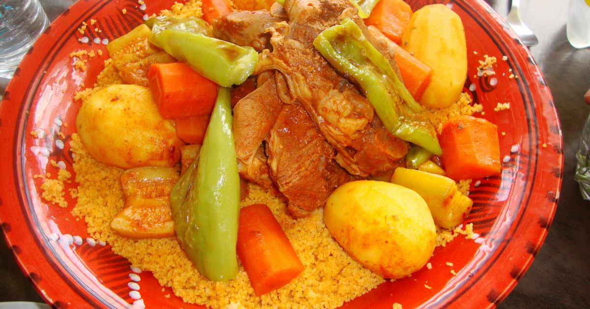

Ingrédients couscous-tunisien de 8 personnes?
- 500 g de semoule moyenne
- 2 c. à s. de concentré de tomates
- 4 pommes de terre
- 3 piments verts
- Poudre de piment rouge
- Sel ou sel fin
- Gigot de mouton ou Gigot de veau
- 1 oignon
- 3 carottes
- 3 verres d'huile d'olive
- Mélange d'épices tunisien
- Poivre